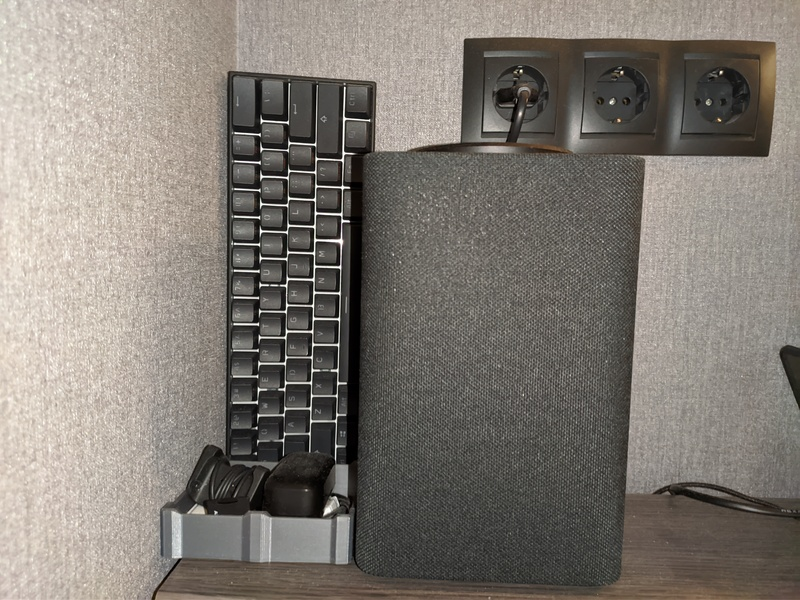

Удобное использование TTS яндекс станции в скриптах при интеграции в Home Assistant

Я просто оставлю это здесь на всякий случай как шпаргалку. У меня периодически возникает необходимость оповещения о чём-то голосом. Например, о провале выполнения какого-нибудь процесса бекапа или об окончании процесса печати детали 3д принтером или о чём угодно другом.
Интеграцию модуля управления станцией с HA я описывать не буду, она описана в документации на сам модуль. Но вот что позволило мне использовать TTS простым и удобным образом - это небольшая автоматизация для HA, которая ждёт отправки текста в определённый топик MQTT и затем уже воспроизводит на яндекс станции. Выглядит это следующим образом:
- id: '1595590318766'
alias: Yandex station tts by mqtt
description: ''
trigger:
- platform: mqtt
topic: /ys/tts
condition: []
action:
- data_template:
media_content_id: '{{ trigger.payload }}'
media_content_type: text
entity_id: media_player.yandex_station_94....70f # здесь нужно указать id станции, полученный после интеграции
service: media_player.play_media
mode: single
Теперь можно отправить в mqtt топик '/ys/tts' текст и станция его произнесёт. Для этого на удалённых инстансах (домашний сервер, множество всяких PI для различных нужд и т.п.) существует скрипт sendtts:
#!/bin/sh
cd `dirname "$0"`
[ -f "config" ] && . ./config
[ -z "$MQTT_HOST" ] && echo "MQTT host is not configured, using 127.0.0.1 by default" && MQTT_HOST=127.0.0.1
[ -z "$MQTT_PORT" ] && echo "MQTT port is not configured, using 127.0.0.1 by default" && MQTT_PORT=127.0.0.1
[ -z "$MQTT_TTSTOPIC" ] && echo "MQTT tts topic is not defined, using /ys/tts by default" && MQTT_TTSTOPIC='/ys/tts'
mqtt="mosquitto_pub -h $MQTT_HOST -p $MQTT_PORT"
[ -n "$MQTT_USER" ] && mqtt="$mqtt -u $MQTT_USER"
[ -n "$MQTT_PORT" ] && mqtt="$mqtt -P $MQTT_PASS"
mqtt="$mqtt -t $MQTT_TTSTOPIC -m "
$mqtt "$1"
И файл с именем config, лежащий в той же директории:
MQTT_HOST=somehost # меняем на свой адрес
MQTT_PORT=1883
MQTT_USER=user # в случае наличия
MQTT_PASS=pass # в случае наличия
MQTT_TTSTOPIC=/ys/tts
Пример вызова:
./sendtts 'Мама мыла раму'
Один из моих сценариев использования - на одну из кнопок многоклавишного выключателя на стене рядом с диваном, на котором я последние полгода пандемии обитаю, подвешена функция прогрева стола и сопла 3D принтера. При нажатии на кнопку HA через SSH запускает скрипт на OrangePi PC, который подключен к 3D принтеру. Скрипт отправляет на TTS оповещение о включении принетра, включает блок питания принтера через модуль реле, ждёт, пока появится TTY устройство, пытается подключиться к принтеру, в случае успеха отправляет на TTS фразу "доступ у управлению принтером получен", затем запускает прогрев с нужными параметрами и озвучивает их - температуру стола и экструдера.
Выглядит это примерно так:
#!/bin/sh
EXTTEMP=225
BEDTEMP=80
[ -n "$1" ] && EXTTEMP="$1"
[ -n "$2" ] && BEDTEMP="$2"
cd `dirname "$0"`
echo "Turning on the printer..."
[ -f "sendtts" ] && ./sendtts "Включение питания эндер 3"
#.printer 1
./api on
echo "Waiting for powering on..."
sleep 3
echo "Waiting for connection..."
./api connect
while [ -z "$(./api stat | grep -F '"operational":true,')" ]; do
sleep 1
done
[ -f "sendtts" ] && ./sendtts "Доступ к управлению эндер 3 получен, включение прогрева. Экструдер $EXTTEMP, стол $BEDTEMP."
echo "Sending to home position, heating..."
./api cmds "\"G28 R X Y Z\",\"M140 S$BEDTEMP\",\"M104 S$EXTTEMP\""
Нужно ещё дописать в скрипт статистики проверку выхода на рабочую температуру и добавить ещё одно опопвещение - об окончании нагрева. Пока просто не успел. Ничего в принципе сложного, но уже чувствуешь себя немного в будущем. Как-нибудь в другой раз напишу отдельно о скриптах для облегчения управления принтером.
Теги: 3d-printing, automatization, smarthome, homeassistant